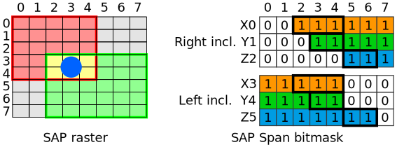
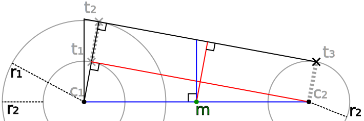
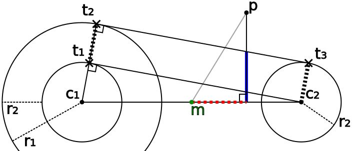
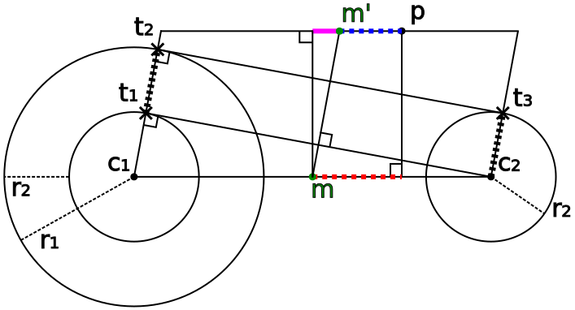
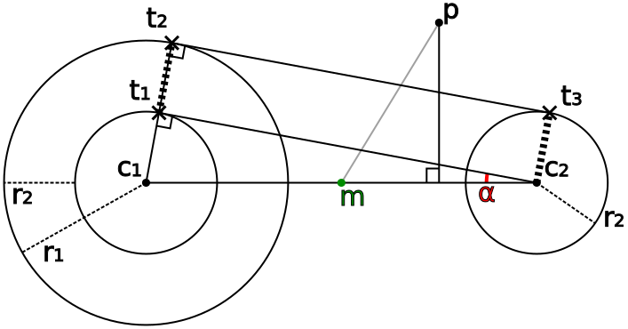
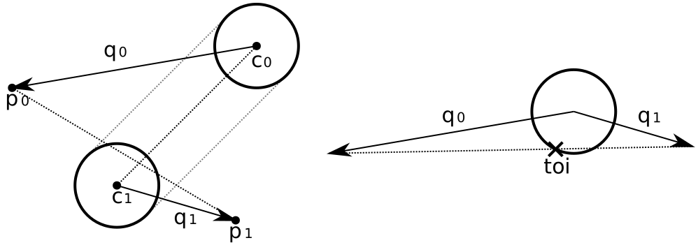

Sphere Capsule collision detection¶
Sphere and capsule collision is divided in 3 steps:
- Sphere/capsule generation
- Acceleration structure generation
- Collision detection
Sphere/ Capsule generation¶
The sphere data set by the user doesn’t need to be converted before it can be used for collision detection. However, the data will be interpolated between frames when continuous collision detection is enabled.
The capsules need more setup work as the representation set by the user is not directly usable for collision detection. Some values are precomputed (in generateCones()) so they won’t have to be computed unnecessarily in the collision detection routine. All the computations are explained in the cone collision detection documentation. Refer to the code to see which values are precomputed.
Sphere acceleration structure¶
We use a small sweep and prune (SAP) acceleration structure to avoid testing each particle against every sphere. We begin by calculating the axis aligned bounding volume containing all particles and collision spheres (SwCollision<T4f>::buildAcceleration()). That space is then divided into an 8x8x8 grid. The span of each sphere along the 3 primary axes are stored in bitmasks where each bit is for a different sphere. So we have 8 bitmasks for each axis. We store the info twice to ensure that particles don’t skip over marked grid cells (when using continuous collision detection). The first set contains spans that are extended to the maximum, while the spans in the second set are extended to the minimum (see image below). So if the sphere was contained in cells 2, 3, and 4 along the x axis, the cells 5, 6, and 7 would also be marked for the first set.
Thick bordered bitmask cells indicate that the sphere is inside. The cells that contain the spheres can be obtained by combining both sets using binary AND. This is done when continuous collision detection is disabled (SwCollision<T4f>::mergeAcceleration()).
We use both bit mask sets when continuous collision detection is enabled to test if the span from the particle movement overlaps the sphere span stored in the bitmasks. For each axis, we test the highest of the two position values against the bitmask from the first set and the lowest against the second set. We don’t have to test the cells in between because the bitmasks are extended (e.g. if the particle moves from cell 5 to cell 1 along the x axis both bitmasks will test positive, even though the particle skipped past the sphere. However, if the particle moved from cell 5 to 6 only one of the cells tests positive, culling the collision).
collideParticles()¶
TODO mass scaling CollideParticles iterates through the cloth particles to handle non-continuous collisions with spheres and capsules. The capsule cones are handled first so that the corresponding spheres can be ignored, ensuring that no double collisions are registered (in the case where a particle intersects both the cone and sphere of the capsule). The sphere and cone collision detection is discussed in the sections below. The results of the collision detection routines are stored in the ImpulseAccumulator which keeps track of the depenetration delta sum, friction velocity sum (multiplied by the frame time) and collision count (to calculate the averages).
The average depenetration delta is directly added to the current particle position.
The friction impulse (calculated by calculateFrictionImpulse()) is directly applied to the previous particle position so that only the velocity is changed.
Capsule collision detection¶
Cone collision detection¶
Capsule collision detection is split in two parts: Sphere and cone collision detection. Here we describe the cone collision detection. Spheres are described in the next subsection.
The cone needs to be constructed in a way that it correctly fills the space between two spheres with centers \(c_i\) and radii \(r_i\), where \(i \in \left\{ 1,2 \right\} \). The capsule is a continuous surface, so the cone needs to intersect both spheres at a tangent. The problem can be solved in 2d by projecting it onto a plane that contains both sphere centers. We use an approach similar as described here.

Two circles are constructed: circle m (green) with center on midpoint \(m = \frac{1}{2}\left(c_1+c_2\right)\) and radius \(r_m=\frac{1}{2}|c_2-c_1|\) and circle 3 (black) with center \(c_1\) and radius \(r_3=r_1-r_2\). The intersection between circle 3 and m gives us the tangent point \(t_1\) (see here for more details on circle intersections). The tangent line intersects points \(c_2\) and \(t_1\).
\(t_2\) is obtained by offsetting \(t_1\) by \(\frac{t_1-c_1}{r_3}r_2\), and similar with \(c_2\) to obtain \(t_3\).
The cone length can be derived from the diagram: $$ V_l = \left|t_3-t_2\right| = \left|t_1-c_2\right| = \sqrt{\left|c_1-c_2\right|^2-\left(r_1-r_2\right)^2} $$ The axis length of the cone is $$ A_l = \left|c_2 - c_1\right| $$ The axis of the cone is $$ A = \frac{\left(c_2 - c_1\right)}{A_l} $$
The radius of the cone above point \(m\) (in blue) is $$ V_r = \left(\frac{1}{2}\left(r_2 - r_1\right) + r_1\right) \frac{A_l}{V_l} = \frac{1}{2}\left(r_2 + r_1\right) \frac{A_l}{V_l} $$ as the triangles made from the red-blue line pairs are similar. The slope of the cone (the rate of change of the radius) is $$ V_s = \frac{r_2 - r_1}{V_l} $$
Detecting if point p lies inside the cone is done in two steps: detecting if it lies within the infinite cone and checking if it is contained within the span of \(t_2\) and \(t_3\).
Point P is first projected onto the cone axis \(A\) giving the distance (dotted red in diagram) to \(m\) along \(A\): $$ d = \left(p-m\right)\cdot A $$ The radius below p (thick blue) is $$ r_p = d V_s + V_r $$ The distance of \(p\) to \(A\) is given by: $$ d_{\bot} = \sqrt{\left|p-m\right|^2 - d^2} $$ The point is contained within the infinite cone when \(r_p> d_{\bot}\).
The distance \(d_o\) (blue dashed line) between \(p\) and \(m’\) is given by: $$ d_o = d + V_s d_{\bot} $$ \(d_o\) is less than \(\frac{1}{2}A_l\) if point \(p\) lies inside the finite capped cone: $$ \frac{1}{2}A_l < d_o$$
Todo: collision response
The (un-normalized) collision normal \(n\) is given by: $$ n = (p-m) - d_o A $$
The collision response scale is calculated using: $$ s = \frac{r_p}{d_{\bot}}cos (\alpha)^2 - cos (\alpha)^2 $$ where \(cos(\alpha)^2\) is calculated using: $$ cos(\alpha)^2 = 1 - \left(\frac{r_2-r_1}{A_l}\right)^2 = 1 - sin(\alpha)^2 = \left(\frac{\left|t_1-c_2\right|}{\left|c_1-c_2\right|}\right)^2 $$
\(\frac{r_p}{d_{\bot}} \) is 1 when the particle is exactly on the surface of the cone, bigger than 1 when the particle has penetrated the capsule. \(cos (\alpha)^2\) ???
$$ s = \cos\left(\alpha\right)^2 \left(\frac{r_p}{d_{\bot}}-1\right) $$
Variables in generateCones():
center = \(m\)
axis.xyz = \(\frac{1}{2}(c_2-c_1) = \frac{1}{2}A_l A\)
cIt->axis = \(A\)
axis.w = \(-\frac{1}{2}r_3\)
sqrAxisHalfLength = \((\frac{1}{2}A_l)^2\)
sqrConeHalfLength = \((\frac{1}{2}V_l)^2\)
slope = \(\frac{\frac{1}{2}(r_2-r_1)}{\frac{1}{2}V_l} = \frac{(r_2-r_1)}{V_l} = V_s\)
cIt->radius = \((\frac{1}{2}(r_2-r_1)+r_1)\frac{A_l}{V_l} = V_r \)
Variables in cloth::SwCollision<T4f>::collideCones():
todo
Sphere collision detection¶
We calculate the following values for the regular particle against sphere collision:
delta = particle - sphereCenter
sqDeltaLegnth = epsilon + dot(delta, delta)
negativeScale = 1 - sphereRadius/sqrt(sqDeltaLegnth)
NegativeScale will be negative when the particle does not collide with the sphere, at which point we can skip the rest of the work. We apply a depenetration impulse to the particle when it does collide:
particleDelta -= delta * negativeScale
Sphere CCD¶
Continuous collision detection between cloth and spheres calculate the time of impact between cloth particles and moving spheres. Both particles and spheres move linearly during a solver iteration, so this problem is the same as a line sphere intersection (making the particle movement relative to the sphere).
We start with the following equations: \begin{align} x =& p_0 + (p_1-p_0)t\\ y =& c_0 + (c_1-c_0)t\\ \left|x-y\right|^2 =& (r_0+(r_1-r_0)t)^2 \end{align}
where \(p_0\) and \(p_1\) are the beginning and end positions of the particle, \(c_0\) and \(c_1\) are the beginning and end positions of the sphere, and \(r_0\) and \(r_1\) are the beginning and end radii of the sphere.
We simplify the equations by working relative to the sphere: \begin{align} q_0 =& p_0 - c_0\\ q_1 =& p_1 - c_1\\ x-y =& q_0 + (q_1-q_0)t\\ \end{align}
Expanding this gives us: \begin{align} q_0^2 + 2q_0(q_1-q_0)t + (q_1-q_0)^2t^2 =& r_0^2 + 2r_0(r_1-r_0)t + (r_1-r_0)^2t^2\\ q_0^2 + (2q_0q_1-2q_0^2)t + (q_1^2-2q_1q_0+q_0^2)t^2 =& r_0^2 + (2r_0r_1-2r_0^2)t + (r_1^2-2r_1r_0+r_0^2)t^2\\ \end{align} We rewrite this as a quadratic polynomial: \begin{align} q_0^2-r_0^2 + (2q_0q_1-2q_0^2)t-(2r_0r_1-2r_0^2)t + (q_1^2-2q_1q_0+q_0^2)t^2-(r_1^2-2r_1r_0+r_0^2)t^2 =0\\ q_0^2-r_0^2 + (2q_0q_1-2r_0r_1-2q_0^2+2r_0^2)t + (q_1^2-r_1^2-2q_1q_0+2r_1r_0+q_0^2-r_0^2)t^2 =0\\ m_{00} + (2m_{01}-2m_{00})t + (m_{11}-2m_{01}+m_{00})t^2 =0\\ \end{align}
Using the following definitions for readability: \begin{align} m_{00} =& q_0^2 - r_0^2\\ m_{11} =& q_1^2 - r_1^2\\ m_{01} =& q_0q_1 - r_0r_1\\ \end{align}
We can now use the quadratic formula to solve for \(t\): \begin{align} a =& m_{11}-2m_{01}+m_{00}\\ b =& 2m_{01}-2m_{00}\\ c =& m_{00}\\ d =& b^2-4ac = 4m_{01}^2-4m_{01}m_{00}+4m_{00}^2 -4m_{00}m_{11}+4m_{00}m_{01}-4m_{00}^2\\ d =& 4m_{01}^2-4m_{00}m_{11}\\ t =& \frac{-b+\sqrt{d}}{2a} = \frac{-m_{01}+m_{00} + \sqrt{\left(m^2_{01}-m_{00}m_{11}\right)}}{m_{11}-2m_{01}+m_{00}}\\ \end{align}
The variables used in SwCollision<T4f>::collideSpheres are very similar:
dotPrevPrev = \(m_{00}\)
dotPrevCur = \(m_{01}\)
dotCurCur = \(m_{11}\) //(epsilon is omitted here)
discriminant = \(\frac{1}{4}d\)
sqrtD = \(\frac{1}{2}\sqrt{\left(d\right)}\)
halfB = -\(\frac{1}{2}b\)
minusA = \(-a\)
Continuous collision detection can be skipped if one (relative) sphere is contained in the other (relative) sphere, or \(\left|q_0-q_1\right|^2 < (r_0-r_1)^2\). We can reuse \(a\) for this check. If \(a > 0\) Continuous collision detection is executed (TODO: check if this makes sense. it looks like discrete collision detection never runs when CCD is enabled. Are all cases really handled when a<0?): \begin{align} a >& 0\\ a =& m_{11} - 2m_{01} + m_{00}\\ =& q_1^2-r_1^2 - 2q_0q_1 +2r_0r_1 + q_0^2-r_0^2\\ =& q_0^2+q_1^2- 2q_0q_1 -r_1^2 + 2r_0r_1 -r_0^2\\ =& (q_1-q_0)^2 - (r_1-r_0)^2 < 0\\ =& (p_1 - c_1 - p_0 + c_0)^2 - (r_1-r_0)^2\\ =& ((p_1 - p_0) - (c_1 - c_0))^2 - (r_1-r_0)^2 < 0\\ \end{align} TODO: check code if we can skip both if sphere 0 is \(\in\) sphere 1 or sphere 1 is \(\in\) sphere 0 as we only do collision detection with sphere 1 in the end.
Collision will happen within the current frame when \( 0 < t < 1\). The following position correction is applied to stop the particle from penetrating the sphere: \begin{align} p’_1 =& c_1 + q_1 + \left(q_0-q_1\right)\left(1 - t\right)\\ =& p_1 + \left(q_0-q_1\right)\left(1 - t\right) \end{align} Note that \(q_1 + \left(q_0-q_1\right)\left(1 - t\right)\) is the toi position relative to the toi sphere center. This offset is added to the current sphere center \(c_1\), this is correct if the particle sticks to the sphere for the rest of the iteration step duration.
The rest of the steps are the same as the non-continuous collision detection (but using the distance from the toi calculation).
TODO: check the other collisionMask calculations and comments:
// skip continuous collision if the (un-clamped) particle
// trajectory only touches the outer skin of the cone.
T4f rMin = prevRadius + halfB * minusA * (curRadius - prevRadius);
collisionMask = collisionMask & (discriminant > minusA * rMin * rMin * sSkeletonWidth);
\begin{align} r_{min} =& r_0 - \frac{1}{2}ba(r_1-r_0)\\ \frac{1}{4}d >& -a r_{min}^2 s\\ \frac{1}{4}d >& -a (r_0 - \frac{1}{2}ba(r_1-r_0))^2 s\\ \frac{1}{4}d >& -asr_0^2 - as\frac{1}{4}b^2a^2(r_1-r_0)^2\\ \frac{1}{4}d >& -asr_0^2 - as\frac{1}{4}b^2a^2(r_1-r_0)^2\\ d >& -4asr_0^2 - 4as\frac{1}{4}b^2a^2(r_1-r_0)^2\\ d >& 4a(-sr_0^2 - s\frac{1}{4}b^2a^2(r_1-r_0)^2)\\ \frac{d}{4a} >& -sr_0^2 - s\frac{1}{4}b^2a^2(r_1-r_0)^2\\ \frac{d}{4a} >& -s(r_0^2 + \frac{1}{4}b^2a^2(r_1-r_0)^2)\\ \end{align}
\begin{align} y =& at^2 + bt + c\\ t =& -b/(2a)\\ y_{min} =& c - \frac{b^2}{4a} = -\frac{d}{4a} = \text{vertex}_y\\ \end{align}
\begin{align} b =& 2m_{01}-2m_{00}\\ b =& 2q_0q_1 - 2r_0r_1 - 2q_0^2 + 2r_0^2\\ b =& 2q_0q_1 - 2q_0^2 + 2r_0^2 - 2r_0r_1\\ b =& 2(p_0-c_0)(p_1-c_1) - 2(p_0-c_0)^2 + 2r_0^2 - 2r_0r_1\\ b =& 2(p_0p_1-p_0c_1-c_0p_1+c_0c_1) - 2(p_0^2+c_0^2 - 2 p_0c_0) + 2r_0^2 - 2r_0r_1\\ \end{align}
TODO: what is going on:
// reduce ccd impulse if (clamped) particle trajectory stays in sphere skin,
// i.e. scale by exp2(-k) or 1/(1+k) with k = (tmin - toi) / (1 - toi)
T4f minusK = sqrtD * recip(minusA * oneMinusToi) & (oneMinusToi > gSimd4fEpsilon);
oneMinusToi = oneMinusToi * recip(gSimd4fOne - minusK);
Cone CCD¶
Cone continuous collision detection works in a similar way as the sphere CCD.
At roughly double the cost of discrete collision, the linearized trajectory of the particle relative to the capsule is tested for intersection. The 6th order polynomial is approximated by a quadratic equation, assuming the capsule length and slope stay constant.
– From Engwiki, csigg
We use the cross product method instead of dot products to calculate the point line distance: $$ \text{distance}_\bot = \left|(p-c) \times a\right| $$ where \(c\) is a point on the line, \(a\) is the unit direction of the line (axis) and \(p\) is the point.
We start with the following equations: \begin{align} x =& \left(p_0-c_0\right) \times A_0 + \left(\left(p_1-c_1\right)\times A_1-\left(p_0-c_0\right)\times A_0\right)t\\ \left|x\right|^2 =& (r_0+(r_1-r_0)t)^2 \end{align} where \(p_0\) and \(p_1\) are the beginning and end positions of the particle, \(c_0\) and \(c_1\) are the beginning and end positions of the cone center, \(A_0\) and \(A_1\) are the beginning and end cone axes, and \(r_0\) and \(r_1\) are the beginning and end radii of the cone below the particle (like \(r_p\) from the discrete cone section above): \begin{align} r = ((p-c) \cdot A) V_s + V_r \end{align} where \(V_s\) is the cone slope and \(V_r\) is the radius above the cone mid point.
Note that \(x\) is very similar to the \(x-y\) from the sphere ccd section above, only adding the cross products.
We simplify the equations using the following definitions: \begin{align} q_0 =& \left(p_0 - c_0\right) \times A_0\\ q_1 =& \left(p_1 - c_1\right) \times A_1\\ x =& q_0 + (q_1-q_0)t\\ \end{align}
We can now solve for \(t\) in the same way as described in the sphere ccd section above. The checks determining if collision occurred, and the skipping conditions are also the same as with sphere ccd.
So far, all checks were against the infinite cone. Next, we check if the collision falls on the cone section between the spheres. We interpolate the following values to the time of impact:
\begin{align} p_{toi} =& p_0-c_0 - (p_0-c_0 - p_1-c_1)t\\ A_{ltoi} =& \left|A_1A_{l1} - (A_1A_{l1} - A_0A_{l0})(1-t)\right|\\ A_{toi} =& \left(A_1A_{l1} - (A_1A_{l1} - A_0A_{l0})(1-t)\right)A_{ltoi}^{-1}\\ \end{align} Where \(A_{l0}\) is the axis length at the start and \(A_{l1}\) at the end.
We calculate the point line distance, and the distance along the axis: \begin{align} d_{\bot} =& \sqrt{p_{toi}^2 - \left(p_{toi} \cdot A_{toi}\right)^2}\\ d_| = & p_{toi} \cdot A_{toi} \end{align}
Now we can calculate \(d_o\) again: $$ d_o = d_| + V_s d_{\bot} $$ which leaves us at with the same conditions used in the non-continuous capsule section.
calculateFrictionImpulse()¶
The calculateFrictionImpulse function is used to do the friction calculations after the collisions have been calculated. The friction calculation is simplified by assuming the particle only touches one flat surface which approximates the average collision surface. The normal of this surface is in the same direction as the collision delta calculated from the collision detection functions (mDeltaXYZ in the accumulator).
The velocity of the surface is calculated each time a collision is detected. The sum of these velocities also stored in the accumulator (mVelXYZ). The velocity of the friction surface is the average of all those velocities.
The friction impulse will be along the tangential part of the relative velocity between the particle and the surface. The friction impulse magnitude is proportional to the friction coefficient and the collision delta magnitude. (TODO: Is the collision delta a good approximation for the normal force?)